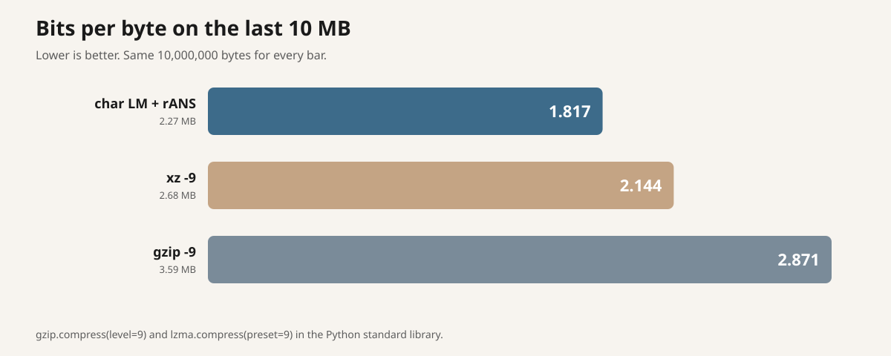
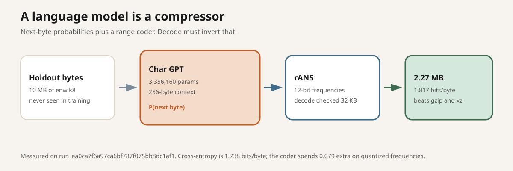
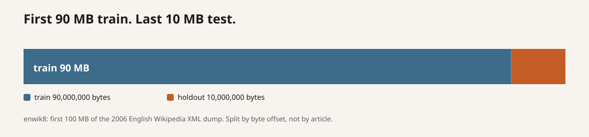
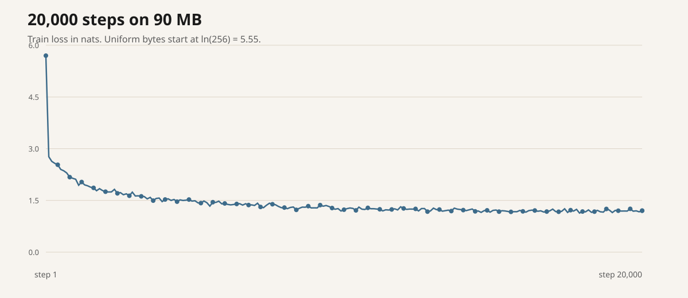
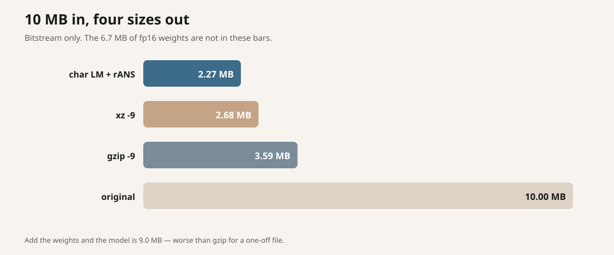

2026-09-14 · post #7
A $1.34 language-model compressor
A small next-byte model is already a compressor. We just had to write the bits down.
We trained a 3.4 million parameter character GPT on Compute and used its next-byte probabilities as an arithmetic coder. On the last 10 MB of enwik8 the bitstream is 1.817 bits per byte. gzip -9 needs 2.871. xz -9 needs 2.144. The first 32,768 decoded bytes matched the original. The headline GPU run cost $0.91. The whole issue was $1.34.
- Model + rANS
- 1.817 bpc
- gzip -9
- 2.871 bpc
- xz -9
- 2.144 bpc
- Issue spend
- $1.34

Prediction is compression
If you can assign a probability to the next byte, Shannon already told you how many bits it costs: −log₂ P. A language model is a conditional probability table. A range coder turns that table into an actual file. Decode inverts the same table and must reproduce the original bytes.
This is not a new idea. The Hutter Prize is exactly this bet, on this file. We wanted the smallest version that still beats gzip on a cheap GPU evening.

enwik8, by byte offset
enwik8 is the first 100,000,000 bytes of the 3 March 2006 English Wikipedia XML dump. The job downloads the zip on the machine. You do not upload it. Train is the first 90 MB. Test is the last 10 MB. The split is a cut in the file, not a split by article, which is how the classic benchmark does it.

A 3.4M character GPT, then rANS
Four layers, 256-wide embeddings, four heads, 256-byte context. 3,356,160 parameters. Byte vocabulary. Trained with AdamW for 20,000 steps, batch 64. That is about 328 million training tokens, a few passes over the 90 MB.
Compression is teacher-forced: each 256-byte block is predicted from a BOS byte plus the previous bytes in the block. Those distributions are quantized to 12-bit frequencies and encoded last-to-first with 32-bit rANS. Decode re-runs the model and must land on the same byte.

Beats gzip. Beats xz. Loses if you count the weights.
Headline run run_ea0ca7f6a97ca6bf787f075bb8dc1af1 on a RunPod A100-SXM 80GB. 20,000 steps, then a 2.27 MB bitstream of the 10 MB holdout. Decode of the first 32,768 bytes matched exactly.
| Codec | Bytes | Bits/byte | vs gzip |
|---|---|---|---|
| char LM + rANS | 2,271,393 | 1.817 | −36.7% |
| xz -9 | 2,680,572 | 2.144 | −25.3% |
| gzip -9 | 3,588,805 | 2.871 | — |
| LM + fp16 weights | 8,983,713 | 7.187 | +150% |

That last row is the honest one-off cost. A shared codec can amortize the weights. A zip you email to one person cannot. The ticket asked us to beat gzip on the held-out slice. The bitstream does. The weights-plus-bitstream file does not, and should not be sold as if it does.
Train it on Compute
One file. Hand compute.cx/SKILL.md to your agent, plus the specials in this post’s overlay.
curl -fsSL https://raw.githubusercontent.com/theoriclabs/letsusecompute/main/posts/text-compressor/train.py -o train.py
curl -fsSL https://compute.cx/install.sh | sh
compute setup
compute credits add 10
compute run train.py::train --gpu cheap --dry-run
compute run train.py::train --gpu cheap --timeout 2400 --waitDry-run only prints the upload plan. The real command quotes a GPU before spend. --gpu cheap is the issue default. On this account it quoted Vast RTX-3090 and that machine never came up, so the runs that finished used RunPod A100-SXM. A 1 MB slice is enough to check the coder first:
compute run train.py::train --provider runpod --gpu A100-SXM-80GB --timeout 2400 --wait --args '{"sample": true}'Want to read the script? train.py.
The bitstream landed
Sample run run_d707701d5317807fb18b5773bdf593c9 cost $0.21 and already sat under gzip (2.94 vs 3.00) on 100 KB, but decode drifted because encode and decode used two different quantizers. Headline run run_ea0ca7f6a97ca6bf787f075bb8dc1af1 billed 28 minutes of training plus a minute of boot and a minute of teardown, $0.91. Both returned ok: true. The headline persisted a five-file artifact: model.pt, the 2.27 MB bitstream, summary.json, and two plots. There is no Hub checkpoint. No hf secret was set.
Reports: rpt_8dd79aafd46f69367a2b77f300b6c1e2 (cheap quoted Vast RTX-3090; provider stayed in creating for the boot deadline), rpt_57fccaecaab2a56955d8be7da3e9364c (RunPod A100-PCIe unavailable), rpt_777958be7999b4b142d11b043fdb94ea (mattmahoney.net served an HTML page instead of the zip from the GPU network). Two later creates hit the six-per-hour cap and had to wait.
If artifacts land on your run:
compute artifacts list <run_id>
compute artifacts get <run_id> <artifact_id> <version> --out ./weightsStoring a Hugging Face token does not put it on the machine. Secret.from_name("hf") on train_and_push does.
compute secrets set hf
compute run train.py::train_and_push --provider runpod --gpu A100-SXM-80GB --timeout 2400 --waitWhat this does not claim
It does not replace gzip. It compresses this 10 MB of 2006 Wikipedia XML, with a model that already knows that dump. It does not include the 6.7 MB of weights in the headline 1.817. Decode was checked on 32,768 of 10,000,000 bytes — the full encode used the model; a sequential decode of all 10 MB would have sat on the timeout. rANS is not a free lunch: 1.817 is worse than the 1.738-bit cross-entropy because we snap probabilities to 12-bit frequencies.
That is as far as $1.34 got us from the Hutter Prize.